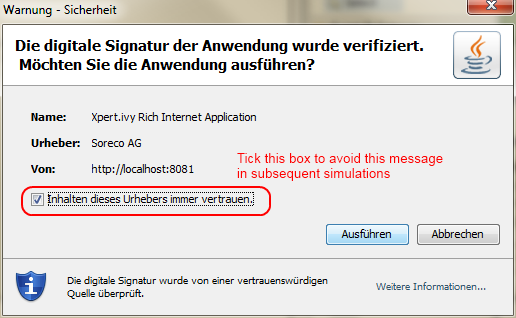

Migration Notes for Xpert.ivy Server 4.1.3 - 4.2 |
This document
informs you in detail how to migrate an Xpert.ivy Server 4.1.3 to
4.2.
|
New Xpert.ivy license requiredXpert.ivy 4.2 Server needs a new license file for the server. Please contact your sales agent to upgrade your license. Consult the article "installing a license" in chapter 3 of the Server Guide to learn how to install the new license. |
New RIA CertificateBoth Designer and Server have been equipped with a new certificate, which will be presented to end users when starting a Rich Application running on a 4.2 server for the first time:  Please inform your users, that they have to accept the above dialog (it is recommended to tick the check box to prevent this dialog from appearing again). |